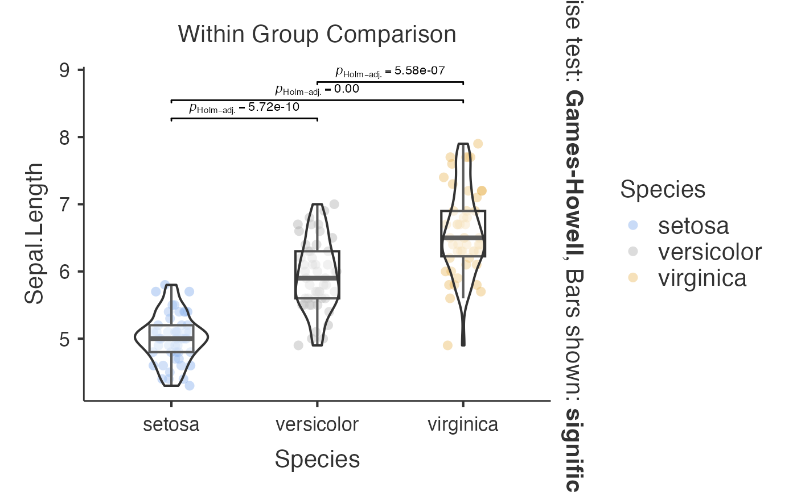
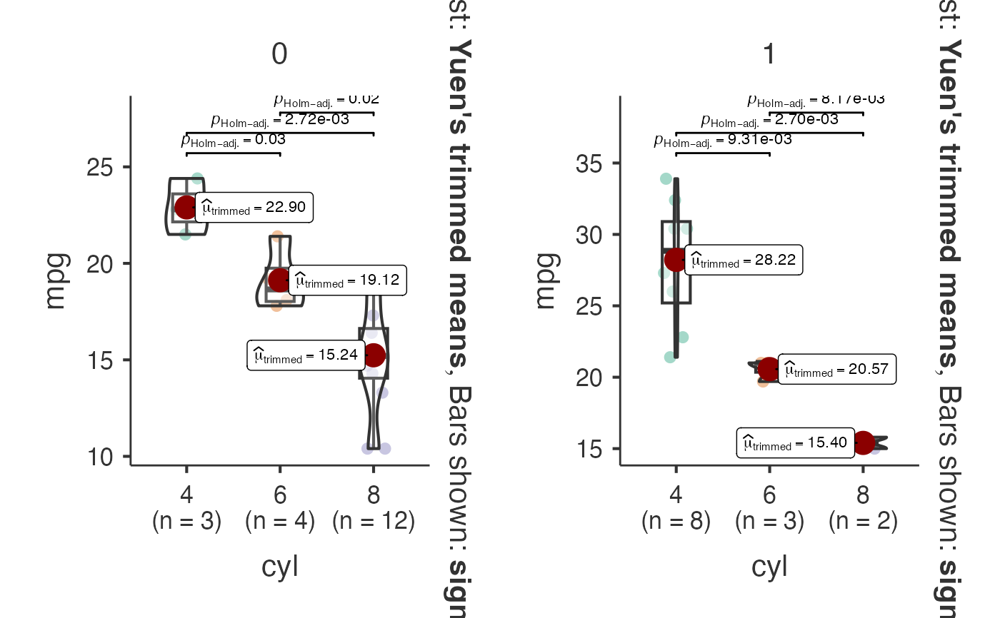
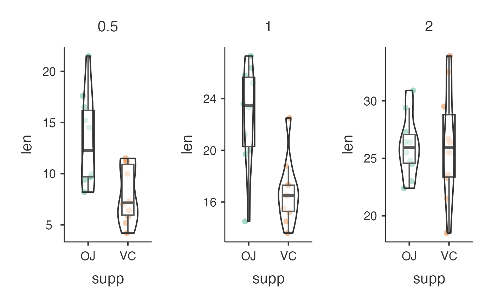
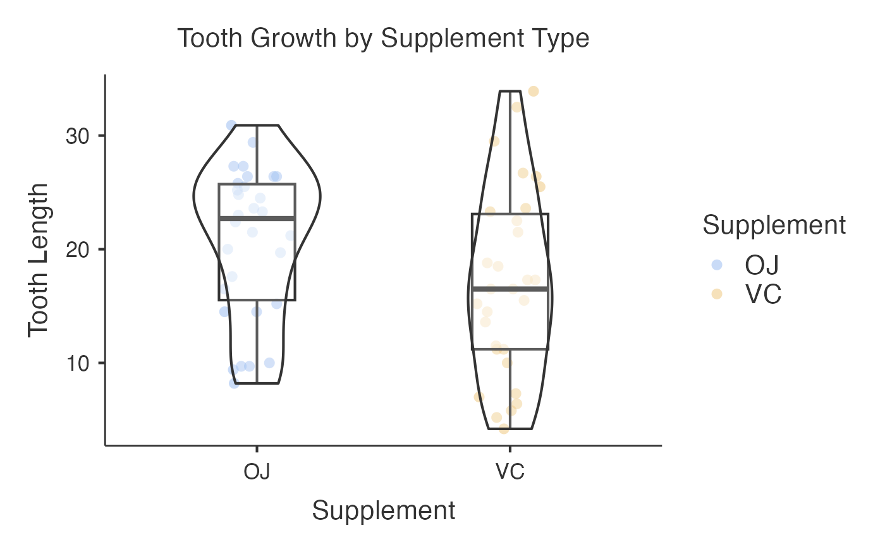
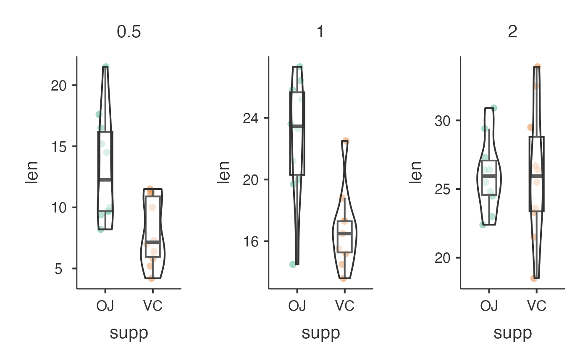
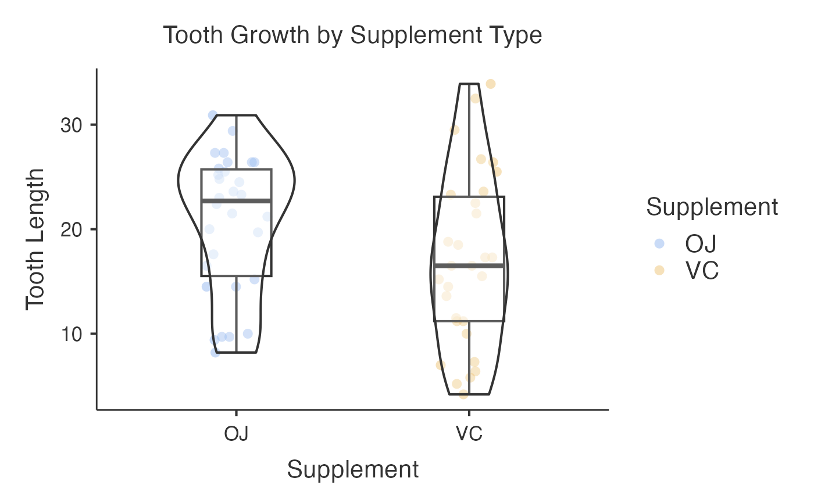

Wrapper Function for ggstatsplot::ggbetweenstats and ggstatsplot::grouped_ggbetweenstats to generate Box-Violin Plots for comparing continuous variables between groups with statistical annotations.
Usage
jjbetweenstats(
data,
dep,
group,
grvar = NULL,
centralityplotting = FALSE,
centralitytype = "parametric",
typestatistics = "parametric",
pairwisecomparisons = FALSE,
pairwisedisplay = "significant",
padjustmethod = "holm",
effsizetype = "biased",
mytitle = "Within Group Comparison",
xtitle = "",
ytitle = "",
originaltheme = FALSE,
resultssubtitle = FALSE,
bfmessage = FALSE,
k = 2,
conflevel = 0.95,
varequal = FALSE,
plotwidth = 650,
plotheight = 450,
colorblindSafe = FALSE
)Arguments
- data
The data as a data frame.
- dep
.
- group
.
- grvar
.
- centralityplotting
.
- centralitytype
.
- typestatistics
.
- pairwisecomparisons
.
- pairwisedisplay
.
- padjustmethod
.
- effsizetype
.
- mytitle
.
- xtitle
.
- ytitle
.
- originaltheme
.
- resultssubtitle
.
- bfmessage
Whether to display Bayes Factor in the subtitle when using Bayesian analysis.
- k
Number of decimal places for displaying statistics in the subtitle.
- conflevel
Confidence level for confidence intervals.
- varequal
Whether to assume equal variances across groups for parametric tests.
- plotwidth
Width of the plot in pixels. Default is 650.
- plotheight
Height of the plot in pixels. Default is 450.
- colorblindSafe
Whether to use colorblind-safe color palette for plot elements.
Examples
# Basic comparison between groups
jjbetweenstats(
data = iris,
dep = "Sepal.Length",
group = "Species",
typestatistics = "parametric",
pairwisecomparisons = TRUE
)
#>
#> BOX-VIOLIN PLOTS TO COMPARE BETWEEN GROUPS
#>
#> Violin plot analysis comparing Sepal.Length by Species.
#> Warning: The `size` argument of `element_line()` is deprecated as of ggplot2 3.4.0.
#> ℹ Please use the `linewidth` argument instead.
#> ℹ The deprecated feature was likely used in the jmvcore package.
#> Please report the issue at <https://github.com/jamovi/jmvcore/issues>.

# Multiple variables comparison
jjbetweenstats(
data = mtcars,
dep = c("mpg", "hp", "wt"),
group = "cyl",
typestatistics = "nonparametric",
pairwisecomparisons = TRUE,
pairwisedisplay = "significant",
padjustmethod = "bonferroni"
)
#>
#> BOX-VIOLIN PLOTS TO COMPARE BETWEEN GROUPS
#>
#> Violin plot analysis comparing mpg, hp, wt by cyl.
#> Error in purrr::pmap(.l = list(y = dep2_symbols, messages = FALSE), .f = function(y, messages) { plot_args <- list(data = mydata, x = rlang::sym(group), y = !!y, messages = messages, title = opts$mytitle, xlab = opts$xtitle, ylab = opts$ytitle, type = opts$typestatistics, pairwise.comparisons = opts$pairwisecomparisons, pairwise.display = opts$pairwisedisplay, p.adjust.method = opts$padjustmethod, effsize.type = opts$effsizetype, bf.message = opts$bfmessage, k = opts$k, conf.level = opts$conflevel, var.equal = opts$varequal, point.args = opts$pointargs, results.subtitle = opts$resultssubtitle, centrality.plotting = if (!is.null(opts$centrality.plotting)) opts$centrality.plotting else FALSE, centrality.type = if (!is.null(opts$centrality.type)) opts$centrality.type else NULL) if (!is.null(opts$violinargs)) { plot_args$violin.args <- opts$violinargs } if (!is.null(opts$boxplotargs)) { plot_args$boxplot.args <- opts$boxplotargs } do.call(ggstatsplot::ggbetweenstats, plot_args)}): ℹ In index: 1.
#> Caused by error in `!y`:
#> ! invalid argument type
# Grouped analysis with split variable
jjbetweenstats(
data = mtcars,
dep = "mpg",
group = "cyl",
grvar = "am",
typestatistics = "robust",
centralityplotting = TRUE,
centralitytype = "robust",
)
#>
#> BOX-VIOLIN PLOTS TO COMPARE BETWEEN GROUPS
#>
#> Violin plot analysis comparing mpg by cyl, grouped by am.

 # Bayesian analysis with custom aesthetics
jjbetweenstats(
data = ToothGrowth,
dep = "len",
group = "supp",
grvar = "dose",
typestatistics = "bayes",
bfmessage = TRUE,
mytitle = "Tooth Growth by Supplement Type",
xtitle = "Supplement",
ytitle = "Tooth Length"
)
#>
#> BOX-VIOLIN PLOTS TO COMPARE BETWEEN GROUPS
#>
#> Violin plot analysis comparing len by supp, grouped by dose.


# Bayesian analysis with custom aesthetics
jjbetweenstats(
data = ToothGrowth,
dep = "len",
group = "supp",
grvar = "dose",
typestatistics = "bayes",
bfmessage = TRUE,
mytitle = "Tooth Growth by Supplement Type",
xtitle = "Supplement",
ytitle = "Tooth Length"
)
#>
#> BOX-VIOLIN PLOTS TO COMPARE BETWEEN GROUPS
#>
#> Violin plot analysis comparing len by supp, grouped by dose.

